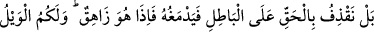
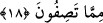
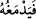
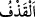
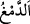
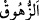

Bu irâdemizin eseri olurdu. Ama “biz” bunu “yapanlardan değiliz.” Yâni farazâ
böyle bir şey yapacak olsaydık, (katımızdan bir eğlence) edinirdik. Ancak böyle bir
şeyi, ya da başkasını, edinmeye kudretimiz olmadığı için değil, hikmete ters olduğundan
irâde etmemiz muhâldir. Şu halde eğlence edinmemiz kesinlikle muhâldir.
et-Te’vîlâtü’n-Necmiyye’de şöyle der: “Buna benzer kirlerden Hazretimizin
kudsiyetinin celâli yücedir. Bu türlü lekelerden Cenâb-ı Kibriyâmız azizdir/yücedir.
Buna benzer hususlardan mukarreb melekler bile münezzehtir. Onlar mahlûk olan bizim
lütuf ve ihsana mazhar olmuş kullarımızdır. Hâlikıyyet makamının böyle şeylerden
münezzeh olması elbette daha uygundur.”
18. Bilakis biz, hakkı bâtılın tepesine bindiririz de o, bâtılın işini bitirir. Bir de
bakarsınız ki, bâtıl yok olup gitmiştir. (Allâh’a) yakıştırdığınız sıfatlardan dolayı
yazıklar olsun size!
“Bilakis biz, hakkı bâtılın tepesine bindiririz de o, bâtılın işini bitirir.” yâni onu
helâk eder, yok eder.
Bu ifâde ile Allâh’ın çocuk edinmesi ve bunu irâde etmesi konusu bırakılıp başka bir
konuya geçilmektedir. Sanki şöyle denilmektedir: “Lakin biz onu (bir eğlence edinmeyi)
murad etmeyiz. Aksine bizim işimiz, hakkı bâtıla üstün kılmaktır. Ciddiyet, îman,
Kur’ân ve benzerleri hak cümlesindendir. Eğlence, küfür ve diğer bâtıl şeyler de bâtıl
cümlesindendir. Bâtıl, hakkın zıddıdır. Araştırıldığında sebâtı olmayan şeydir.
Ehl-i tefsîr şöyle demiştir: “__WORD__ (işini bitirir)” ifâdesi, galib kılmak ve musallat
etmek anlamında istiâredir. Hakkın bâtıl üzerine şiddetle atılması, atılan şeyin sertliğini,
bâtılı mahvetmesini ve ortadan kaldırmasını gerektirir. Bu da içi boş ve kof olan bir
şeyi, yâni dimağı parçalamaktır. Öyle ki onun zarını yarar ve ruhun çıkmasına yol açar.
Bu ifâde ile hakkın bâtılı geçersiz kılması tasvir edilmektedir. Hak, elmas veya yakut
gibi sert bir cisme benzetilmiştir. Bu sert cisim, ipek veya toprak gibi gevşek ve içi boş
bir cisme atılmış, onu yok etmiştir.
el-Miftâh sâhibi şöyle demiştir: “__WORD__ (atma)” ve “__WORD__ (işini bitirip yok etme)”
fiilleri aslında cisimler hakkında kullanılır. “el-Kazf” daha sonra hakkı bâtılın üzerine
getirip üstün kılmak, “ed-demğ” ile de bâtılın giderip yok etmek için istiâre olunmuştur.
Burada kendisinden istiâre olunan şey hissîdir, kendisi için istiâre yapılan ise aklîdir.
Yâni burada aklî olanın, hissî olana teşbîhi vardır. Dinleyenin zihninde iyice yerleşmesi
için aklî olan bir tasavvur, hissedilebilen bir şeye delâlet eden sözlerle ifâde edilmiştir.
“Bir de bakarsınız ki, bâtıl” tamâmen “yok olup gitmiştir.” “__WORD__, rûhun çıkıp
gitmesidir. Cümlenin isim cümlesi olarak getirilmesi, sanki bâtılın temelden yokmuş